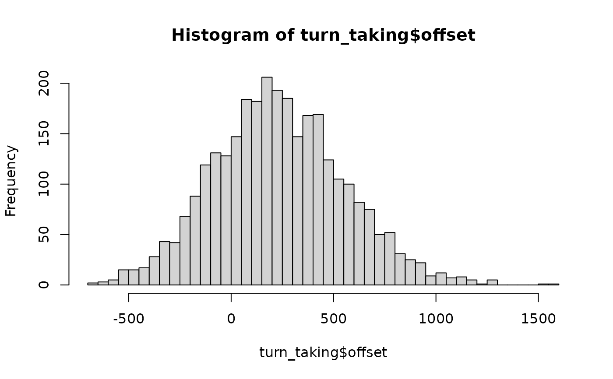

The gap between the end of a yes/no question and the start of its answer, in 25 question-answer pairs from each of 12 conversations in each of 10 languages. Negative values are overlaps. In every language, gaps cluster just above zero and are skewed to the right; languages differ in their average gap by a few hundred milliseconds. Disconfirmations and non-answers come later; answers to a questioner who is looking at the responder come sooner.
Format
A tibble with 3000 rows and 6 columns:
- language
"Danish","Dutch","English","Italian","Japanese","Korean","Lao","Tzeltal","Yélî Dnye"or"ǂĀkhoe Haiǁom".- conversation
Conversation ID: the first three letters of the language and a number, e.g.
Dan_01; 12 per language.- response
"confirmation"or"disconfirmation".- answer
"answer"or"non-answer"(e.g. I don't know).- gaze
Whether the questioner was looking at the responder,
"no"or"yes".- offset
Time from the end of the question to the start of the answer in ms.
Details
True model: offset = language_baseline + c0 + 207 * disconfirmation + 132 * non-answer - 69 * gaze + e, where c0 is a
by-conversation offset (SD 60 ms) and e is ex-Gaussian (a normal with
SD 200 ms plus an exponential with mean 150 ms, centred). The three
effects are the estimates in Stivers et al. (2009, Table 1). Baselines
are set so that each language's expected mean equals the mean reported
for it, from 7 ms (Japanese) to 469 ms (Danish). The conversations and
answers are simulated.
References
Stivers, T., Enfield, N. J., Brown, P., Englert, C., Hayashi, M., Heinemann, T., Hoymann, G., Rossano, F., de Ruiter, J. P., Yoon, K.-E. & Levinson, S. C. (2009). Universals and cultural variation in turn-taking in conversation. Proceedings of the National Academy of Sciences, 106(26), 10587-10592. doi:10.1073/pnas.0903616106
Levinson, S. C. & Torreira, F. (2015). Timing in turn-taking and its implications for processing models of language. Frontiers in Psychology, 6, 731. doi:10.3389/fpsyg.2015.00731
Examples
sort(tapply(turn_taking$offset, turn_taking$language, median))
#> Japanese Tzeltal Yélî Dnye Dutch English
#> 8.0 62.0 109.0 145.5 173.0
#> Korean Italian Lao Danish ǂĀkhoe Haiǁom
#> 205.0 303.5 413.5 435.5 449.0
hist(turn_taking$offset, breaks = 60)

if (requireNamespace("lme4", quietly = TRUE)) {
m <- lme4::lmer(offset ~ response + answer + gaze + language + (1 | conversation),
data = turn_taking)
lme4::fixef(m)[c("responsedisconfirmation", "answernon-answer", "gazeyes")]
}
#> responsedisconfirmation answernon-answer gazeyes
#> 216.18719 111.99350 -83.38316